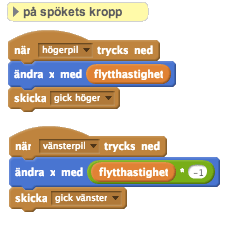
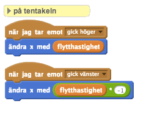
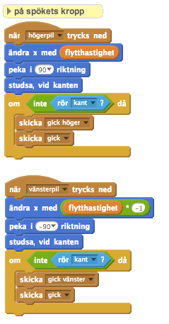
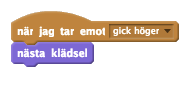

Checklista
När ditt monster består av många olika sprites kommer du behöva säkerställa att alla sprites rör sig tillsammans. Hellre än att lägga till förflyttningskommando till alla dina sprites, kan du enkelt ansluta dina kontroller till din kroppssprite och
skickaevents för att kontrollera vilken annan sprite som helst. När våran tentakelsprite (eller någon annan sprite för den delen!) tar emot ettgick högerevent, kan vi flytta den åt höger också.

Att
skickaevent innebär också att om vi vill ändra på kommandona som styr förflyttningen, behöver vi bara ändra på ett av scripten. Kika på detta exempel:
Här säger vi åt kroppen att titta åt det håll som det rör sig (se till att din sprites riktning är satt till att "bara titta åt höger och vänster") och stanna och vända sig om när den kolliderar med skärmens kant. Du kommer också märka att vi har omslutit våra sändningar i ett
om-block, vi vill bara att de andra kroppsdelarna ska flytta sig om kroppen inte är på skärmens kant. Om du bestämmer dig för att lägga till animering i rörelsen, måste alla andra rörelse ta en sekund också (använd ettvänta-block för att se till att de alla är i fas).Du kan också animera din kropps sprite genom att byta
klädsel, gör det genom att byta varje gång ett gick event tas emot.